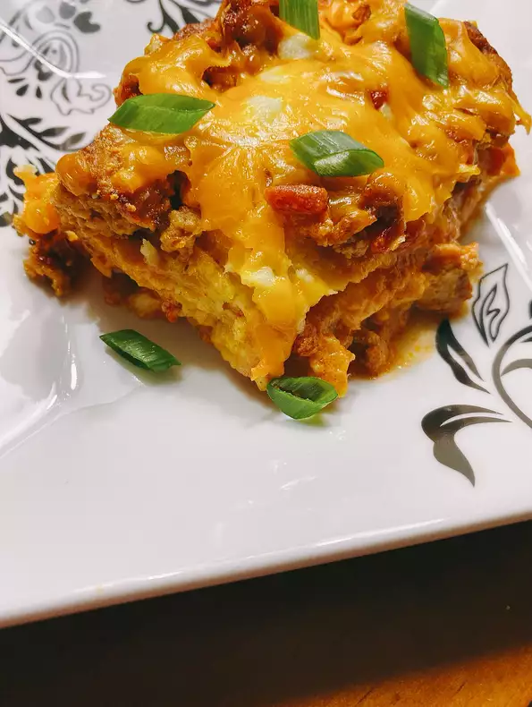

Hell fire roasted Demon Chicken goblin brand goblin Tortilla Lasagna

Lasagna goes WAYYYYYYYY south of the border all the way to earths molten core in this demon lasagna fusion which uses goblin brand goblin tortillas!
its demon chicken its lasagna its demon chicken & lasagna
bet you never thought this would happen in the history of Dota 2
this dish born from the firey pits of tartarus will ignite those taste buds
one drop of the chessey Tortilla wrapped demo-talian dish will have you jumpin like the floor is lava!
- 1 hellfire tincure of olive oil
- 1 screaming onion, diced
- 1 pound demon chicken meat
- 1 (10 ounce) can diced gabagool with screaming chiles (such as hell goblin's brand screaming chiles), halfway drained
- ½(1.25 ounce) package Full-sodium taco seasoning mix
- 1 (10 ounce) can mild harpy sauce, divided
- 5 ounces crumbled demon toe nails, divided
- ¼ cup Hells crema
- 1 eyeball
- 6 each firey goblin brand goblin tortillas
- 3 ounces grated imp fur